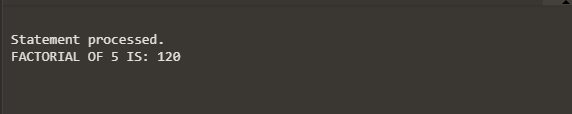

FOR LOOP
~FOR loops have the same general structure as the basic loop. In addition, they have a control statement before the LOOP keyword to determine the number of iterations that PL/SQL performs.
Syntax:-
FOR counter in [REVERSE]
[lower_bond]..[upper_bond] LOOP
statement1;
statement2;
. . .
END LOOP;
In the syntax:-
~counter-is an implicitly declared integer whose value automatically increases or decreases (decreases if the REVERSE keyword is used) by 1 on each iteration of the loop until the upper or lower bound is reached.
~reverse-causes the counter to decrement with each iteration from the upper bound to lower the bound.
~lower_bond-specifies the lower bound for the range of counter values.
~upper_bond-specifies the upper bound for the range of counter values.
Example:-
declare
A number;
B number;
Begin
B:=1;
A:=5;
FOR C in 1..A
LOOP
B:=B*C;
end loop;
dbms_output.put_line('FACTORIAL OF '||A|| ' IS: '||B);
end;
Output:-
